VITURE¶
VITURE is a top brand in AR glasses, providing a special gaming experience. This guide will help you set up your VITURE Gen 1 Glasses with SuperDepth3D, based on your graphics card (GPU).
{kind=link}
VITURE is one of the key players in the AR glasses industry.¶
Setting Up VITURE with Intel GPU¶
To use your VITURE AR Glasses with an Intel GPU, follow these steps:
Initial Steps¶
Update your Arc Drivers: Make sure you have the newest Arc Drivers installed.
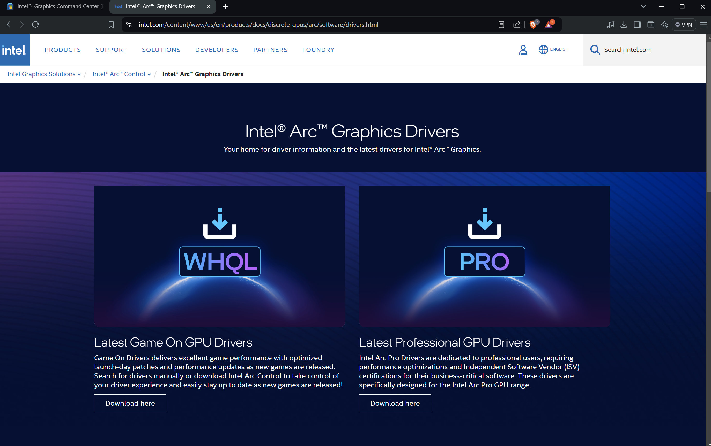 Screenshot of the Intel Arc Drivers page.¶
Download Intel Graphics Command Center: Install the beta version of the Intel Graphics Command Center application.
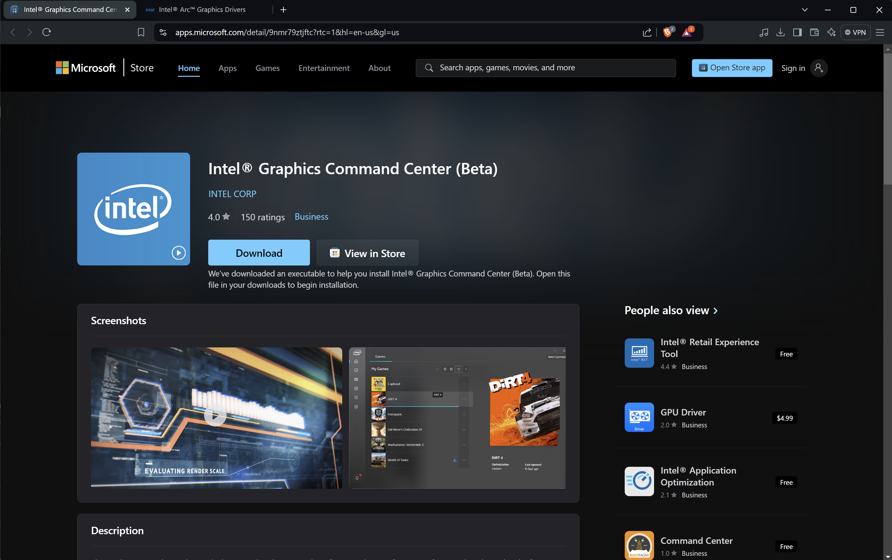 Screenshot of the Intel Graphics Command Center app page.¶
{kind=link}
{kind=link}
Configuring VITURE with Intel GPU¶
Switch to 3D Mode: Plug in your VITURE AR Glasses. Hold down the first button for a few seconds to switch them to 3D Mode.
Windows should see it as a 3840 x 1080p screen:

Screenshot of Windows display settings showing the VITURE screen.¶
If you see this, it’s a good sign.
Launch Intel Graphics Command Center: Open the Intel Graphics Command Center (BETA).
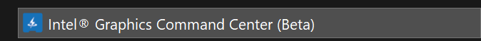 Screenshot of the Intel Graphics Command Center application.¶
Select Display Settings: Click on Display.
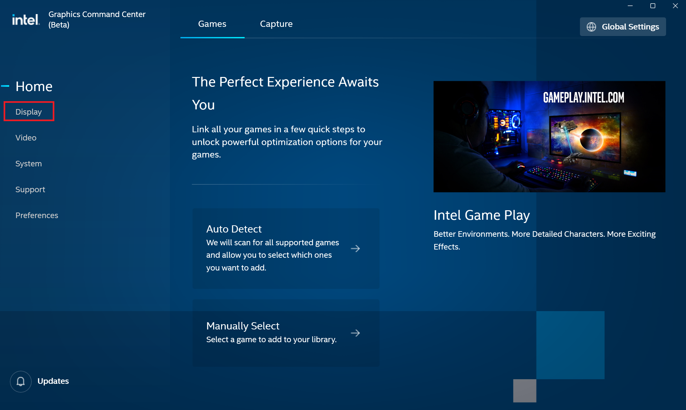 Screenshot showing the Display option in Intel Graphics Command Center.¶
Select VITURE Screen: Click on the screen labeled VITURE.
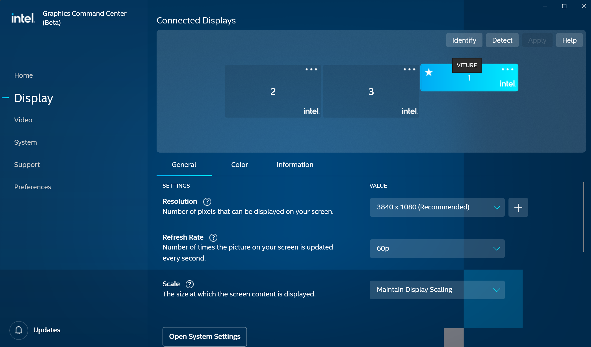 Screenshot showing the VITURE screen selected.¶
Change Resolution: Go to settings and change the resolution from 3840 x 1080 to 1920 x 1080.
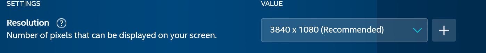 Screenshot showing the resolution settings.¶
Screenshot showing the resolution changed.¶
Set Scale Size: Change the scale size to Stretched.
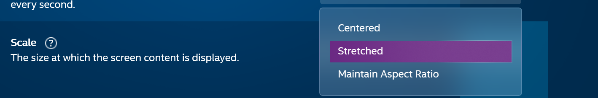 Screenshot of the scale size options.¶
Verify Settings: Your settings should now look like this:
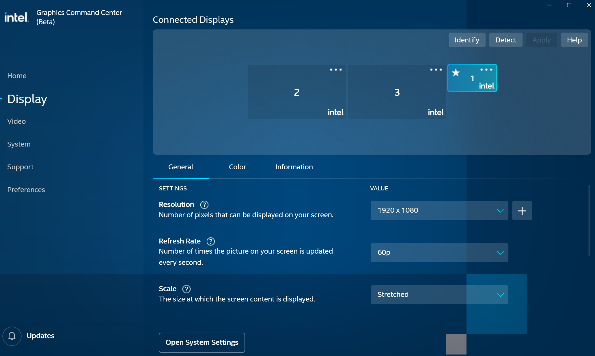 Screenshot of the final display settings.¶
{kind=link}
{kind=link}
{kind=link}
{kind=link}
{kind=link}
{kind=link}
{kind=link}
Now you can start your game with SuperDepth3D and enjoy it in stereo 3D.
Setting Up VITURE with NVIDIA GPU¶
To use your VITURE AR Glasses with an NVIDIA GPU, follow these steps:
Update your NVIDIA Drivers: Make sure you have the newest NVIDIA Drivers installed.
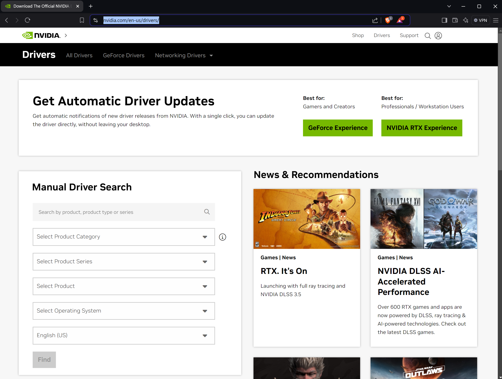 Screenshot of the NVIDIA drivers page.¶
Switch to 3D Mode: Plug in your VITURE AR Glasses. Hold down the first button for a few seconds to switch them to 3D Mode.
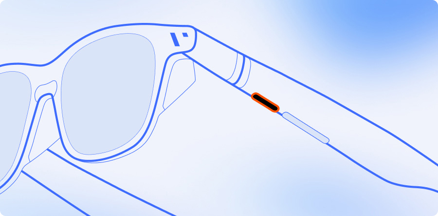 Image of VITURE glasses showing the button location.¶
Windows should see it as a 3840 x 1080p screen:
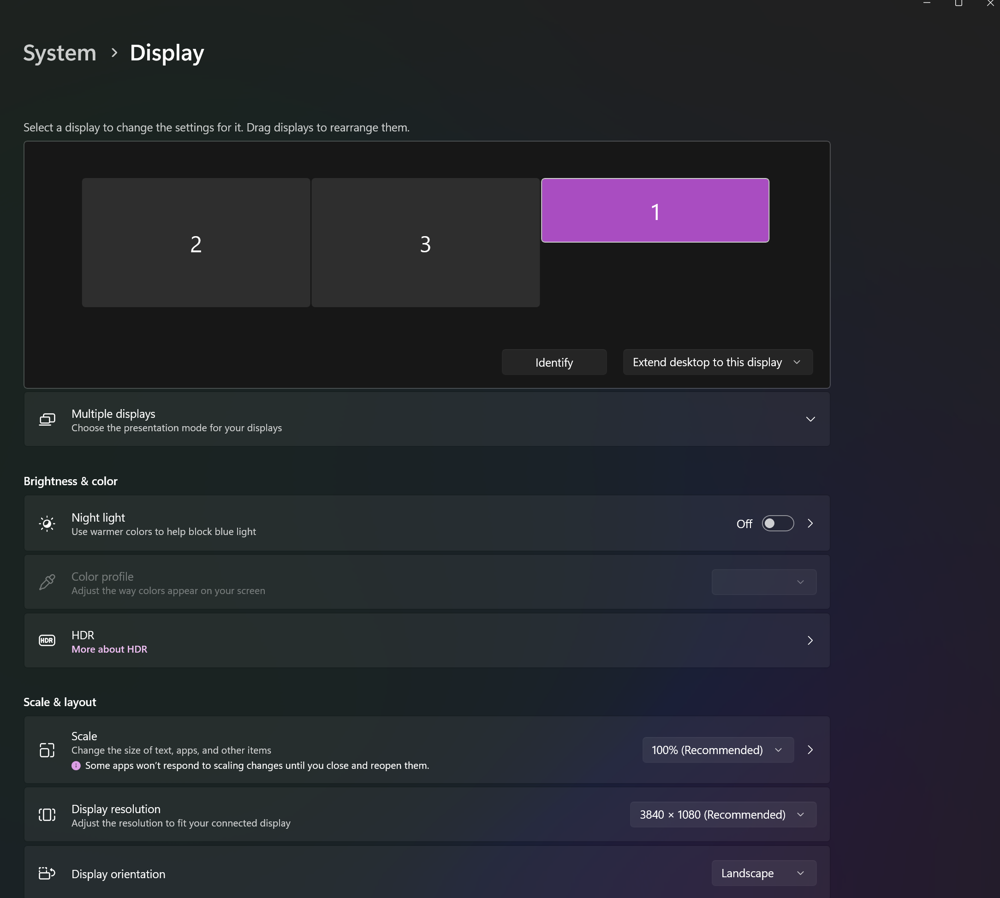 Screenshot of Windows display settings showing the VITURE screen.¶
If you see this, it’s a good sign.
Launch NVIDIA Control Panel: Open the NVIDIA Control Panel.
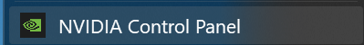 Screenshot of the NVIDIA Control Panel.¶
Change Resolution: Click on Change Resolution and set it to 1920 x 1080.
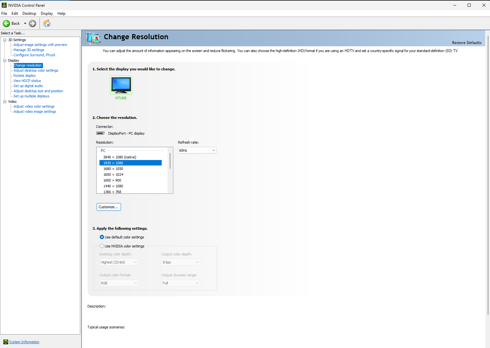 Screenshot of the NVIDIA resolution settings.¶
Adjust Desktop Size and Position: Go to Adjust Desktop size and Position. Set it to Fullscreen, and the other settings should automatically be correct.
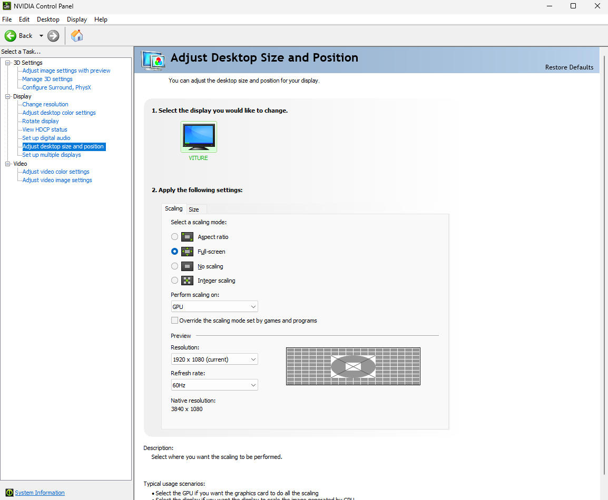 Screenshot of the NVIDIA desktop size and position settings.¶
{kind=link}
{kind=link}
{kind=link}
{kind=link}
{kind=link}
{kind=link}
Now you can start your game with SuperDepth3D and enjoy it in stereo 3D.